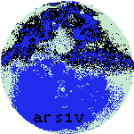

============================================================
Baslik: Arsiv Kurallari
Son Duzenleme: 2020-Ocak
Arsiv Discord
Archive.org
============================================================
-
- En onemli kural: Dosyalara kesinlikle Watermark
*
eklenmemeli. Yapilan arsiv bilinirlik, para veya takdir icin
yapilmamali. Kimseden tesekkur beklenmemeli, tesekkur edilmedi diye
dellenilmemeli. (Eger ekleyecekseniz insanlar o Watermark'i Adobe
Photoshop gibi yazilimlar ile silecektir. Silinemiyorsa o dosyayi
arsivlemeyeceklerdir. Boylece arsivcilige faydadan cok zarariniz
dokunmus olacaktir. Oturup 300 sayi dergiden adini silmekle mi
ugrasacagiz? Hayir, ugrasmayacagiz.)
-
- Dosya isimlerinde Turkce kararkterler kullanilmamali. Eger dosya .RAR,
.ZIP, .CBR, .CBZ gibi bir dosya ise barindirdigi dosyalarin isminde de
Turkce karakterler olmamali. Arsivleme icin onemli tum yazilimlar
yabanci oldugundan Ingilizce olmayan karakterler o dosyayi islerken
sorun cikartacaktir. (Orn. Archive.org)
-
- .CBR (Comic Book Rar) yerine .CBZ (Comic Book Zip) kullanilmali. .RAR
dosyalarini acmak icin WinRar gerekirken .ZIP dosyalarini her isletim
sisteminde herhangi bir yazilim yuklemeden acmak mumkun. (Dosya uzantisi
.CBR'den .CBZ olarak 2 saniyede degistirilebiliyor fakat yine de
yuzlerce dosya ile calisan insanlari ugrastirmayin, .CBZ kullanin.
Ayrica arsiv yapiyorsunuz, bundan 50 sene sonra .ZIP'i acabilme sansiniz
.RAR'i acabilme sansinizdan daha fazla.)
-
- Dosya isimlerinde bosluk, yani " " kullanilmamali. Bosluk yerine "_"
da kullanilmamali. Bazi yazilimlarda kullanicilar dosya ismini okurken
"_" karakterini " " ile karistirabilir. DOSYA ISIMLERINDE BOSLUK YERINE
"-" KULLANILMALI.
-
- Arsivlenen derginin resmi ismi "NaBeR" ise arsiv/dosya ismine "Naber"
yazilmali, "NaBeR" degil. Kelimenin ilk harfi buyuk, sonraki harfleri
kucuk olmali. Orn. "MegAmiga" yerine "Megamiga" yazilmali.
-
- Yapilan arsivler Mediafire, Mega, DosyaYukleCcCssXX gibi abidik
siteler uzerinden arsivlenmemeli. Arsivlenen link 2 yil sonra erisilemez
halde olacaktir. Eger arsivlenecekse, link surekli olarak erisilebilir
olarak guncellenmeli. Bu da arsivleyen kisinin insiyatifinde olmadigi
icin bu tur siteler hicbir sekilde kullanilmamali. 1 adet lokal kopya +
1 adet bulut kopyasi ve bu iki kaynagin surekli besleyecegi, Archive.org
gibi topluma acik bir platformda tutulacak 1 kopya yeterli olacaktir.
-
- Taratilan eserler ham halleriyle arsivlenmeli. Rotuslu halleri
arsivlenmek isteniyorsa mutlaka ham haliyle beraber arsivlenmeli.
- Arsiv korsan degildir, korsan da arsiv degildir.
============================================================
Arsiv Discord
Archive.org
arsiv.txtlib.org
utility over style.